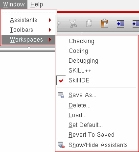
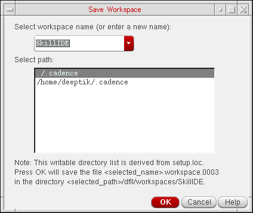
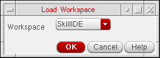
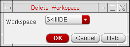
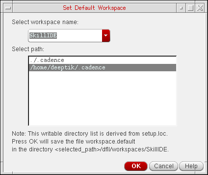

5
Managing Workspaces in SKILL IDE
SKILL IDE lets you configure user interface components to suit your individual work preferences. This customized configuration of toolbars and assistants is called a workspace.
Each workspace in SKILL IDE is designed to help you perform a set of related tasks, such as checking, coding, and debugging. You can choose to either use the available workspaces or create your own workspace while working in the SKILL IDE window.
For detailed information about managing workspaces, see the following two chapters of the Virtuoso Design Environment User Guide:
Selecting a Workspace
To select a workspace using the menu, do the following:
-
Choose Window – Workspaces.
A submenu of workspaces appears listing only those configurations available for use with the current cellview/application.
 -
Select the workspace you want to apply to the current session window.
The program applies the workspace you selected to the current session window. For information about the workspaces available in SKILL IDE, see Workspace Types.
Alternatively, you can select a workspace from the drop-down combo box on the Workspace toolbar.
The assistant panes that are part of a SKILL IDE workspace are initially docked. You can modify the arrangement of your session window and save it as a custom workspace (see Saving a Workspace).
Workspace Types
SKILL IDE provides the following types of workspaces with default docked assistants, which you can modify on requirement basis:
-
SkillIDE: This workspace opens by default when a SKILL IDE session starts (see Setting the Default Workspace for more information). When you exit the SKILL IDE session, the current configuration is saved into the default workspace (see Configuring Your Work Environment for more information).
By default, the SkillIDE workspace does not display any docked assistants. However, you can customize the workspace to suit your requirements. -
Checking: This workspace displays the following docked assistants:
-
Lint Manager
Uses the Lint checker to examine the SKILL code for possible errors that go undetected during normal testing. For details, see Improving the Efficiency of Your SKILL Code. -
Profiler (time mode)
Checks the time and memory consumption of the displayed SKILL program. For details, see Working with the Profiler Assistant.
-
Lint Manager
- Coding: This workspace displays the Finder assistant that helps to view the abstract and syntax statements for the SKILL language elements, such as classes, functions, and methods. For details, see Working with the Finder Assistant.
-
Debugging: This workspace displays the following docked assistants:
-
Trace
Inspects the changes in values of variables as you step through the program. For details, see Examining and Modifying Variable Values. -
Stack
Examines the flow of execution of the function calls that are currently active in the program and are being debugged. For details, see Examining the Call Stack. -
Step Result
Examines the code as you step through the program statements. For details, see Working with Step Result Assistant.
-
Trace
-
SKILL++: This workspace displays the following docked assistants:
-
Method Browser
Helps to browse the method tree of generic functions. For details, see Working with the Method Browser Assistant. -
Class Browser
Helps to understand and follow the class inheritance hierarchy of the classes used in your SKILL code. For details, see Viewing Class Inheritance Relationships.
-
Method Browser
Saving a Workspace
You can customize a workspace by selecting the assistants that you want to display from the Window – Assistants menu. You can then save the customized workspace by doing one of the following:
- Choose Window – Workspaces – Save As.
-
On the Workspace toolbar, select the option.
The Save Workspace form appears.
In this form, specify the name with which you want to save the workspace and select the path where you want to save the workspace. You can specify a new name or make changes to an existing workspace. Click OK to save the changes you made.
If you do not want to save the changes you made to the existing workspace, choose Windows – Workspaces – Revert to Saved to revert to the factory settings.
Loading a Workspace
-
Choose Window – Workspaces – Load.
The Load Workspace form appears.
 - From the Workspace drop-down combo box, select a workspace.
-
Click OK. The program changes the layout of your session window using the workspace you selected.
Deleting a Workspace
-
Choose Window – Workspaces – Delete.
The Delete Workspace form appears.
 - In the Workspace drop-down combo box, select the workspace you want to delete.
- Click OK.
The program deletes the workspace. If you delete the current workspace, the program displays the default workspace.
Setting the Default Workspace
To set a workspace as the default workspace,
-
Choose Windows – Workspaces – Set Default.
The Set Default Workspace form is displayed.
 -
From the Select workspace name drop-down combo box, select the workspace you want to use as the new default.
This workspace will appear for each subsequent invocation of the current application or view type. -
Optionally, select the path where you want to save the default workspace specification to.
All writable locations in your Cadence Search File (CSF) will be listed. - Click OK to set the new default workspace for the current application.
Showing and Hiding Assistants
To show or hide the assistants in the workspace, do one of the following:
- Choose Windows – Workspaces – Show/Hide Assistants
-
Press the
F11key to hide or show the assistants. -
On the Workspace toolbar, select the
 option.
option.
Return to top